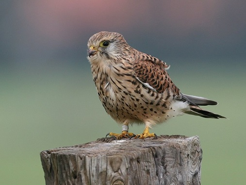

¿Qué son?
Las aves son animales vertebrados de sangre caliente, con el cuerpo cubierto de plumas, tetrápodos, es decir tienen 4 extremidades, dos patas y dos alas, capacidad para volar (aunque no todas vuelan, por ejemplo el pingüino) y pueden regular su temperatura corporal,.
Son los únicos vertebrados que vuelan, excepto los murciélagos, los pingüinos, el kiwi, el ñandú y el emú.
Todas las aves tienen algo en común, y es que todas tienen Plumas.
Origen y evolución.
La teoría más aceptada por los científicos es que las aves son dinosaurios evolucionados, más precisamente una evolución de los terópodos (saurisquios carnívoros) tetanuros (colas rígidas) manirraptores.
Estos eran pequeños animales no más grandes que una persona, muy estilizados y perfeccionados para la caza en velocidad y en grupo como.